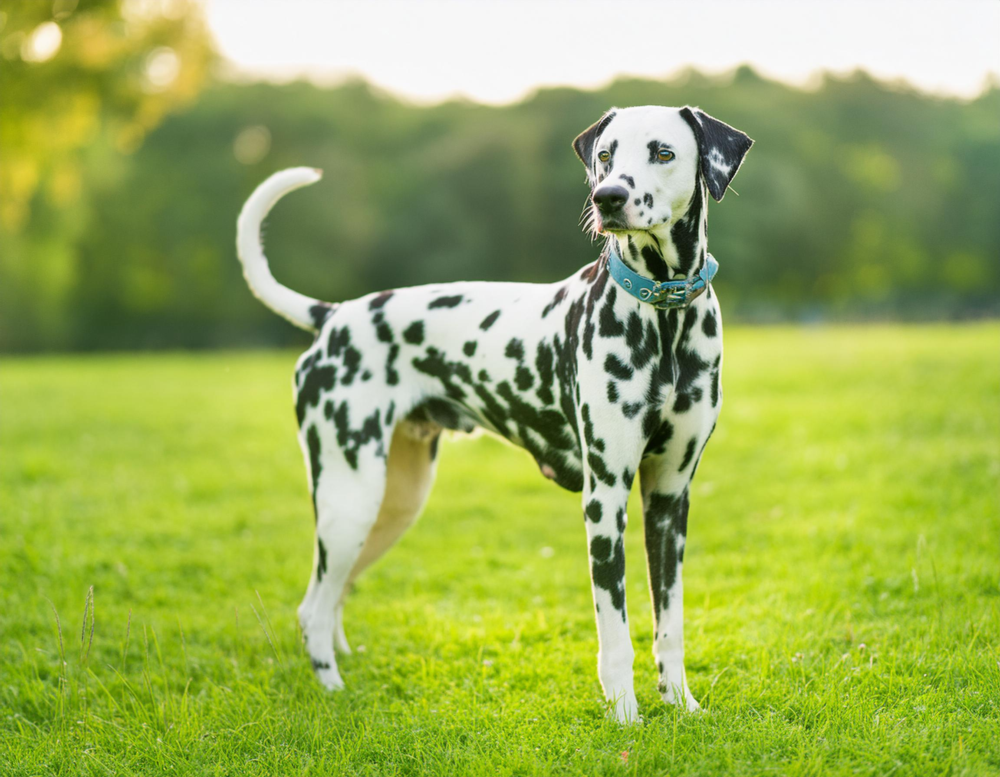

Labrador
Labrador Retrievers are friendly, intelligent, and loyal dogs that make excellent family pets. They are medium-to-large in size with short, water-resistant coats and usually come in black, yellow, or chocolate. Labs are very energetic and need daily exercise to stay healthy and happy. Because they’re eager to please, they’re easy to train and often work as service, therapy, or hunting dogs.
King Charles Spaniel
The Cavalier King Charles Spaniel is a small, affectionate, and gentle companion dog known for its friendly nature. They have long, silky coats and expressive eyes, usually seen in colors like Blenheim, tricolor, black and tan, or ruby. Cavaliers enjoy both playtime and cuddling, making them great for families and apartments. They are smart and eager to please, which makes them easy to train.
Dalmatian
Dalmatians are energetic, smart, and outgoing dogs best known for their unique black or liver-spotted coats. They are medium-to-large in size and were originally bred as carriage dogs, giving them great endurance. Dalmatians need plenty of daily exercise and mental stimulation to stay happy. With proper training and socialization, they become loyal, playful family companions.
French bulldog
French Bulldogs are small, muscular dogs with a smooth coat and distinctive bat-like ears. They are affectionate, playful, and love being around people, making them excellent companions for families or apartment living. French Bulldogs have moderate energy and enjoy short walks and playtime. They are generally easygoing and adapt well to different lifestyles, though they can be prone to breathing issues due to their flat faces.